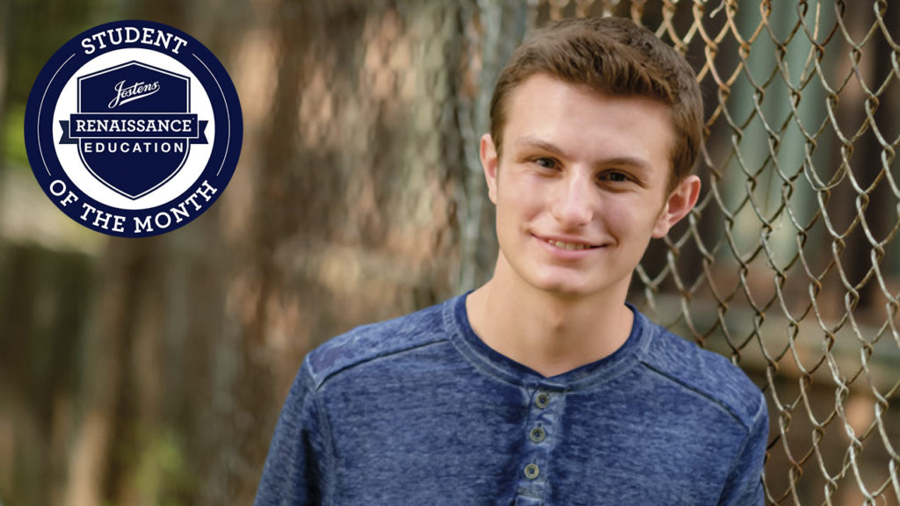

Alumni
Alumni Spotlight
Each month we honor one of our alums who have gone above and beyond in their school or community. All alumni are free to nominate someone for the spotlight each month, otherwise the directors will choose. See below for a full list of our alums.

Our first spotlight goes to Matt Klein, a 2016 Alum. Matt is currently a senior at LaSalle-Peru Township High School in LaSalle, IL. He is the Student Council President, President of the Future Business Leaders of America chapter at LP, and the President of the school's Renaissance chapter as well. Matt was recently chosen as Josten's first National Student of the Month. Congrats, Matt!!
Alumni Lists
2017 Ambassadors2016 Ambassadors
Log your L4S Hours!
Don't forget to keep logging your hours--the goal is 100 hours/year! Log them here at the National HOBY Website.
Service Ideas
Have any awesome ideas for service projects or hours? Let us know and we will list your ideas here!